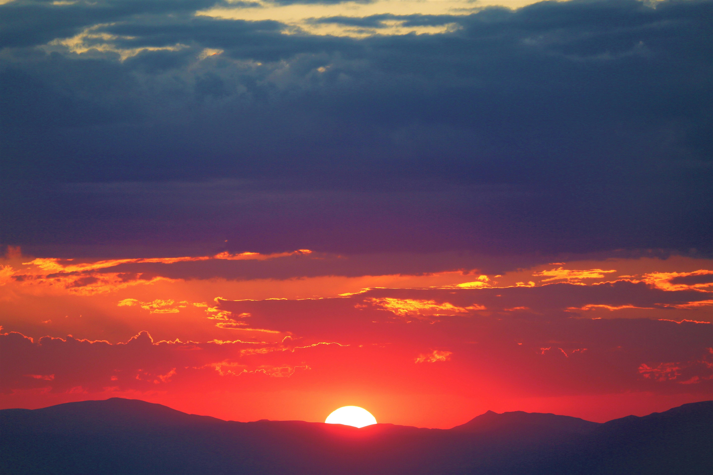
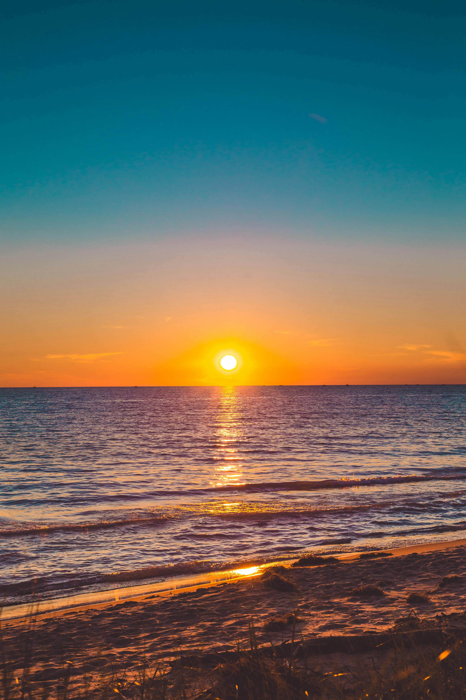

A Sunset is orangish because its light has to travel through a lot of the Earth's atmosphere (the layer of swirling air that surrounds our planet). And all the dust and stuff in the atmosphere makes the light scatter and change so it looks less blue and more orangey-red.
The Sun appears to set faster when it's on the horizon due to an optical illusion. In reality, its angular velocity remains constant. This illusion occurs because we perceive the sun's movement relative to stationary objects on the horizon.

Sunset duration varies by location and season. It's quickest at the equator (20-25 minutes), averages 33 minutes in mid-latitudes, and can last hours near the poles. Local weather and terrain also affect the length of sunsets.

Sunsets are one of the most photographed natural phenomena, popular for their beauty and ever-changing nature.